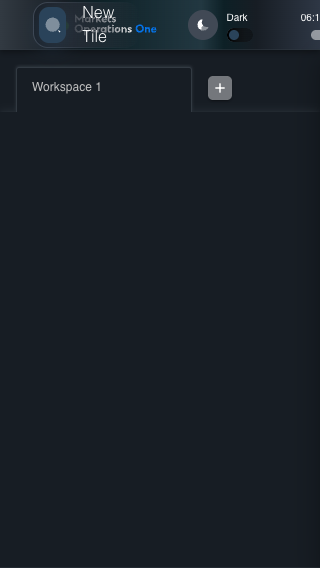
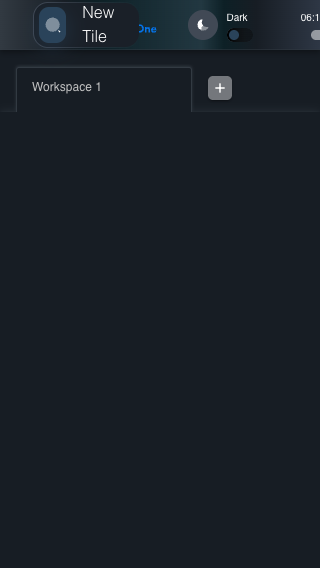
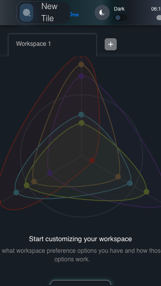

UX-023 responsive shell 320x568
FAIL · application/run-050/ux-023-responsive-shell-320x568-0f515ebd070e-attempt-1 · ACTUAL_APPLICATION_LOCAL_SERVICES
Actual React shell. Controlled catalog, user identity, photo failures, and SystemJS tenant. Chromium only. Accessibility and layout outcomes are proposed probes; no approved conformance standard is inferred.
2026-10-22T06:11:43.429Z to 2026-10-22T06:11:50.850Z
Assertions and result · Artifact manifest · Exact run inputs and source hashes
Result SHA-256:43207523446879516db028e18c0fa2401ed40bbc7f34646ef35bb22ad9590a18Retained failure details
[
{
"message": "TimeoutError: locator.click: Timeout 5000ms exceeded.\nCall log:\n\u001b[2m - waiting for getByTestId('MicroWebUI_base_home').getByTestId('MicroWebUI_base_avatar_IconButton')\u001b[22m\n\u001b[2m - locator resolved to <button tabindex=\"0\" type=\"button\" aria-label=\"User Profiles\" data-mui-internal-clone-element=\"true\" data-testid=\"MicroWebUI_base_avatar_IconButton\" class=\"MuiButtonBase-root MuiIconButton-root MuiIconButton-sizeSmall css-1nok3q3-MuiButtonBase-root-MuiIconButton-root\">\u2026</button>\u001b[22m\n\u001b[2m - attempting click action\u001b[22m\n\u001b[2m 2 \u00d7 waiting for element to be visible, enabled and stable\u001b[22m\n\u001b[2m - element is visible, enabled and stable\u001b[22m\n\u001b[2m - scrolling into view if needed\u001b[22m\n\u001b[2m - done scrolling\u001b[22m\n\u001b[2m - element is outside of the viewport\u001b[22m\n\u001b[2m - retrying click action\u001b[22m\n\u001b[2m - waiting 20ms\u001b[22m\n\u001b[2m 2 \u00d7 waiting for element to be visible, enabled and stable\u001b[22m\n\u001b[2m - element is visible, enabled and stable\u001b[22m\n\u001b[2m - scrolling into view if needed\u001b[22m\n\u001b[2m - done scrolling\u001b[22m\n\u001b[2m - element is outside of the viewport\u001b[22m\n\u001b[2m - retrying click action\u001b[22m\n\u001b[2m - waiting 100ms\u001b[22m\n\u001b[2m 10 \u00d7 waiting for element to be visible, enabled and stable\u001b[22m\n\u001b[2m - element is visible, enabled and stable\u001b[22m\n\u001b[2m - scrolling into view if needed\u001b[22m\n\u001b[2m - done scrolling\u001b[22m\n\u001b[2m - element is outside of the viewport\u001b[22m\n\u001b[2m - retrying click action\u001b[22m\n\u001b[2m - waiting 500ms\u001b[22m\n",
"stack": "TimeoutError: locator.click: Timeout 5000ms exceeded.\nCall log:\n\u001b[2m - waiting for getByTestId('MicroWebUI_base_home').getByTestId('MicroWebUI_base_avatar_IconButton')\u001b[22m\n\u001b[2m - locator resolved to <button tabindex=\"0\" type=\"button\" aria-label=\"User Profiles\" data-mui-internal-clone-element=\"true\" data-testid=\"MicroWebUI_base_avatar_IconButton\" class=\"MuiButtonBase-root MuiIconButton-root MuiIconButton-sizeSmall css-1nok3q3-MuiButtonBase-root-MuiIconButton-root\">\u2026</button>\u001b[22m\n\u001b[2m - attempting click action\u001b[22m\n\u001b[2m 2 \u00d7 waiting for element to be visible, enabled and stable\u001b[22m\n\u001b[2m - element is visible, enabled and stable\u001b[22m\n\u001b[2m - scrolling into view if needed\u001b[22m\n\u001b[2m - done scrolling\u001b[22m\n\u001b[2m - element is outside of the viewport\u001b[22m\n\u001b[2m - retrying click action\u001b[22m\n\u001b[2m - waiting 20ms\u001b[22m\n\u001b[2m 2 \u00d7 waiting for element to be visible, enabled and stable\u001b[22m\n\u001b[2m - element is visible, enabled and stable\u001b[22m\n\u001b[2m - scrolling into view if needed\u001b[22m\n\u001b[2m - done scrolling\u001b[22m\n\u001b[2m - element is outside of the viewport\u001b[22m\n\u001b[2m - retrying click action\u001b[22m\n\u001b[2m - waiting 100ms\u001b[22m\n\u001b[2m 10 \u00d7 waiting for element to be visible, enabled and stable\u001b[22m\n\u001b[2m - element is visible, enabled and stable\u001b[22m\n\u001b[2m - scrolling into view if needed\u001b[22m\n\u001b[2m - done scrolling\u001b[22m\n\u001b[2m - element is outside of the viewport\u001b[22m\n\u001b[2m - retrying click action\u001b[22m\n\u001b[2m - waiting 500ms\u001b[22m\n\n at /Users/lushevol/code/github/ratan-release-impact/workbench/e2e/audit-specs/ux-shell.spec.ts:120:64\n at AuditCapture.step (/Users/lushevol/code/github/ratan-release-impact/workbench/e2e/support/audit-fixture.ts:94:21)\n at /Users/lushevol/code/github/ratan-release-impact/workbench/e2e/audit-specs/ux-shell.spec.ts:120:5",
"location": {
"file": "/Users/lushevol/code/github/ratan-release-impact/workbench/e2e/audit-specs/ux-shell.spec.ts",
"column": 64,
"line": 120
},
"snippet": " 118 | await audit.step(4,async()=>{await page.keyboard.press('Escape');});\n 119 | await audit.step(5,async()=>{await expect(app.drawer).toBeHidden();});\n> 120 | await audit.step(6,async()=>{await app.portal.avatarButton.click({timeout:5000});});\n | ^\n 121 | await audit.step(7,async()=>{\n 122 | await expect(app.portal.profileMenuItem).toBeVisible();\n 123 | const first=await app.portal.profileMenuItem.boundingBox(), second=await app.portal.logoutMenuItem.boundingBox();"
}
]Screenshot capture: CAPTURED. Named frames: 7.
Step screenshot evidence: INCOMPLETE. 6/8 canonical steps have execution screenshots.
Step 7 has no screenshot from an executed step. Step 8 has no screenshot from an executed step.
Canonical step timeline
Given USER-A has Home visible at 320 by 568 CSS pixels
Execution: PASSED.1. step-01 Visible state after step 1: Given USER-A has Home visible at 320 by 568 CSS pixels
2026-10-22T06:11:44.914Z · 320×568
Step: /Users/lushevol/code/github/ratan-release-impact/workbench/tasks/ui-test-coverage-20261022/test-cases.md:12991
SHA-256:56a28baba362d8fba3fcba5548b8ff6c7214c75d291f3b632130e4a4c3fa0a17When USER-A clicks the section labelled "New Tile" on the Home page
Execution: PASSED.2. step-02 Visible state after step 2: When USER-A clicks the section labelled "New Tile" on the Home page
2026-10-22T06:11:45.035Z · 320×568
Step: /Users/lushevol/code/github/ratan-release-impact/workbench/tasks/ui-test-coverage-20261022/test-cases.md:12992
SHA-256:d26fffa53dbe75742bd63d318188cc405cd7f0ec372198be7b084bc7a0f83ebfThen The section labelled "Tile Options" on the Home page is visible within the viewport or its scroll area
Execution: PASSED.
3. step-03 Visible state after step 3: Then The section labelled "Tile Options" on the Home page is visible within the viewport or its scroll area
2026-10-22T06:11:45.082Z · 320×568
Step: /Users/lushevol/code/github/ratan-release-impact/workbench/tasks/ui-test-coverage-20261022/test-cases.md:12993
SHA-256:d26fffa53dbe75742bd63d318188cc405cd7f0ec372198be7b084bc7a0f83ebfWhen USER-A presses "Escape" inside the section labelled "Tile Options" on the Home page
Execution: PASSED.
4. step-04 Visible state after step 4: When USER-A presses "Escape" inside the section labelled "Tile Options" on the Home page
2026-10-22T06:11:45.133Z · 320×568
Step: /Users/lushevol/code/github/ratan-release-impact/workbench/tasks/ui-test-coverage-20261022/test-cases.md:12994
SHA-256:4ef8c5ab0be5bd5fca546f04172c6a2d3c09008d29e59c6d48be634f2fd9ae96Then The section labelled "Tile Options" on the Home page is hidden
Execution: PASSED.
5. step-05 Visible state after step 5: Then The section labelled "Tile Options" on the Home page is hidden
2026-10-22T06:11:45.354Z · 320×568
Step: /Users/lushevol/code/github/ratan-release-impact/workbench/tasks/ui-test-coverage-20261022/test-cases.md:12995
SHA-256:c8a7a716a8dbe56831f74bd02964c0238f1f71fdf317921cb225a738fa5b1738When USER-A clicks the icon button with test ID "${MFE_APP_PREFIX_STYLE}_avatar_IconButton" on the Home page
Execution: FAILED.
6. step-06-failure Visible state when step 6 failed. Later steps did not execute.
2026-10-22T06:11:50.399Z · 320×568
Step: /Users/lushevol/code/github/ratan-release-impact/workbench/tasks/ui-test-coverage-20261022/test-cases.md:12996
SHA-256:e44c2437687d6e03ff6dd2bd70b6df02791ce97104422ece549f7c3d12cff248Then The menu item with test ID "${MFE_APP_PREFIX_STYLE}_avatar_Profile" in the menu with identifier "menu-appbar-avatar" on the Home page is visible without overlap with the menu item labelled "Logout" in the menu with identifier "menu-appbar-avatar" on the Home page
Execution: NOT_EXECUTED.No screenshot is recorded for this step. No executed state is claimed.
And The menu item labelled "Logout" in the menu with identifier "menu-appbar-avatar" on the Home page is enabled and reachable within the viewport
Execution: NOT_EXECUTED.No screenshot is recorded for this step. No executed state is claimed.
Additional named frames

The visible state when the test failed.
2026-10-22T06:11:50.467Z · 320×568Step: Test source: /Users/lushevol/code/github/ratan-release-impact/workbench/e2e/audit-specs/ux-shell.spec.ts:113
SHA-256:
e44c2437687d6e03ff6dd2bd70b6df02791ce97104422ece549f7c3d12cff248Screenshots establish visible state only. Assertions and traces support functional claims.